Ballad Finchcritter · cost 3 berry · 0 pts · 2 copies · uniqueSing away up to 5 cards from your hand and take a point token for each.Mudpie Jestercritter · cost 3 berry · -2 pts · 2 copies · uniquePlant this prankster in a rival village; it takes one of their spaces and costs them 2 points.Parcel Dovecritter · cost 2 berry · 0 pts · 3 copiesReveal 2 cards; you may play one worth up to 3 base points free; discard the other.Trailwarden Foxcritter · cost 2 berry · 1 pt · 2 copies · uniqueRelocate one of your deployed workers to another legal spot. Opens the second Thornhold cell.
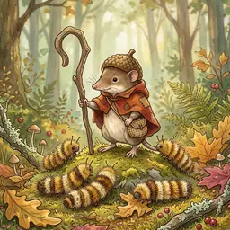
Crook Shrewcritter · cost 3 berry · 1 pt · 2 copies · uniqueGain 3 berries plus 1 point token per token on your Shrine. If bought with berries, they go to a rival.
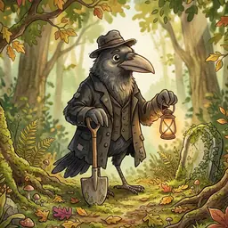
Hollow Sextoncritter · cost 2 berry · 1 pt · 2 copies · uniqueClear 3 meadow cards, refill, then take 1 meadow card. Opens the second Grove plot.Footsore Driftercritter · cost 2 berry · 1 pt · 3 copiesDraw 3 cards. Does not use up a city space.
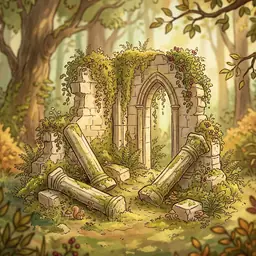
Toppled Hallconstruction · 0 pts · 3 copiesRaze one of your constructions, build here in its place, regain its exact cost, and draw 2 cards.
Production 16
Reedpunt Toadcritter · cost 2 berry · 1 pt · 3 copiesGain 2 twigs for every Allotment (Farm-role card) in your city.Tinder Chipmunkcritter · cost 3 berry · 2 pts · 3 copiesRe-run one other production card in your own city.Poultice Badgercritter · cost 4 berry · 4 pts · 2 copies · uniqueSpend up to 3 berries and take a point token for each one spent.Goodman Volecritter · cost 3 berry · 2 pts · 4 copiesShares a space with one Goodwife. If paired and you own an Allotment, gain any 1 resource on play and every production.
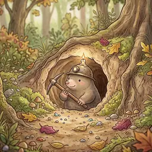
Echo Molecritter · cost 3 berry · 1 pt · 3 copiesMimic any one production card in a rival village, as though it were theirs.
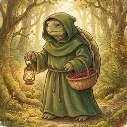
Brother Mosscritter · cost 1 berry · 0 pts · 2 copies · uniqueGive up to 2 berries to a rival and take 2 point tokens for each. Opens the second Cloister slot.
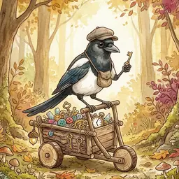
Haggle Magpiecritter · cost 2 berry · 1 pt · 3 copiesSwap up to 2 of your resources for any 2 resources from the supply.Slate Schoolmarmcritter · cost 2 berry · 2 pts · 3 copiesDraw 2 cards, keep one, and hand the other to a rival.Whittle Beavercritter · cost 2 berry · 2 pts · 3 copiesSpend up to 3 twigs and take a point token for each.
Hoard Cellarconstruction · cost 1 twig, 1 resin, 1 pebble · 2 pts · 3 copiesEach production adds a stack (3 twigs, 2 resin, 1 pebble or 2 berries) to this card; send a worker to haul it all away.
Thistle Regentcritter · cost 5 berry · 4 pts · 2 copies · uniqueSend a worker here to play any card worth up to 3 base points from hand or meadow without paying.Mossgrave Gladeconstruction · cost 2 pebble · 0 pts · 2 copies · uniqueA worker settles here forever; reveal 4 cards from deck or discard pile and play one free, discarding the rest.
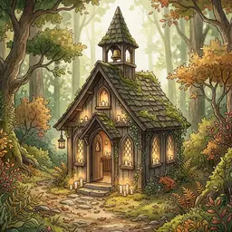
Candlewick Shrineconstruction · cost 2 twig, 1 resin, 1 pebble · 2 pts · 2 copies · uniqueAdd a point token here, then draw 2 cards for every token now on the Shrine.
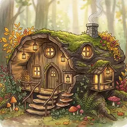
Lantern Restconstruction · cost 2 twig, 1 resin · 2 pts · 3 copiesSend a worker to play a meadow card for 3 fewer resources. Rivals may visit too and pay you 1 point.
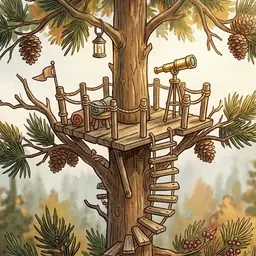
Spyglass Perchconstruction · cost 1 twig, 1 resin, 1 pebble · 2 pts · 2 copies · uniqueCopy any one basic or forest spot, even if it is occupied.
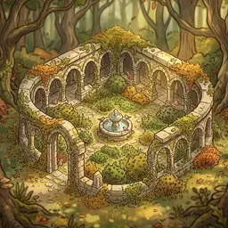
Quietstone Cloisterconstruction · cost 1 twig, 1 resin, 1 pebble · 1 pt · 2 copies · uniqueA worker settles here forever: give 2 resources to a rival and take 4 point tokens.
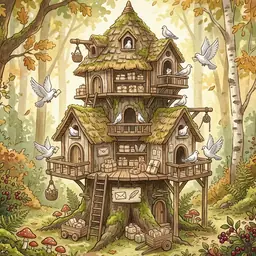
Dovecote Depotconstruction · cost 1 twig, 2 resin · 2 pts · 3 copiesGive a rival 2 cards, discard any others you like, then refill your hand from the deck. Visitors pay you 1 point.
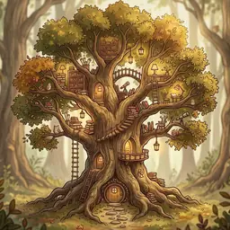
Lorewood Collegeconstruction · cost 1 resin, 2 pebble · 3 pts · 2 copies · uniqueDisband one of your cards, regain its exact cost, plus any 1 resource and 1 point.
Governance 8
Chronicle Owlcritter · cost 2 berry · 1 pt · 3 copies · uniqueWhenever you play another card, draw 1 card afterwards.Hostler Hedgehogcritter · cost 1 berry · 1 pt · 3 copies · uniqueWhen you play a Critter you may send this hedgehog away to cut 3 berries off its price.Gavel Martencritter · cost 3 berry · 2 pts · 2 copies · uniqueWhen playing any card, pay one required resource with a different resource of your choice.
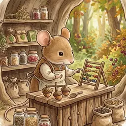
Tallyshop Mousecritter · cost 2 berry · 1 pt · 3 copies · uniqueGain 1 berry whenever you play another Critter.
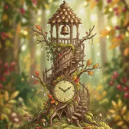
Dewdrop Belfryconstruction · cost 3 twig, 1 pebble · 0 pts · 3 copies · uniquePlace 3 tokens here when built. Before recalling workers each season, spend one to repeat a basic or forest spot you occupy. Leftover tokens score.
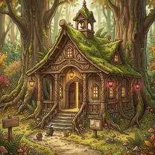
Mosswood Assizeconstruction · cost 1 twig, 1 resin, 2 pebble · 2 pts · 2 copies · uniqueGain 1 twig, resin or pebble each time you build another construction.
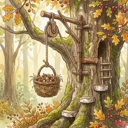
Pulley Liftconstruction · cost 1 pebble · 1 pt · 3 copies · uniqueWhen building a Construction, dismantle this lift to cut 3 resources of your choice off the price.
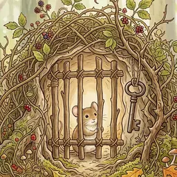
Thornhold Cellsconstruction · cost 1 resin, 2 pebble · 0 pts · 2 copies · uniqueLock one of your Critters beneath this card to cut 3 resources off the price of a card. Opens a second cell with a Trailwarden.
Prosperity 8
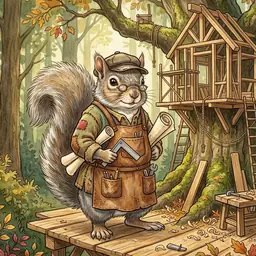
Master Lathwrightcritter · cost 4 berry · 2 pts · 2 copies · uniqueAt the end of the game, score 1 point per resin and per pebble you still hold, to a maximum of 6.Bramble Sovereigncritter · cost 6 berry · 4 pts · 2 copies · uniqueEnd of game: 1 point per basic event and 2 points per special event you achieved.
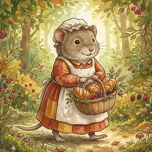
Goodwife Volecritter · cost 2 berry · 2 pts · 4 copiesShares a space with a Goodman; if paired, worth 3 extra points at the end.
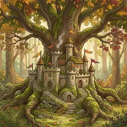
Stonecrown Keepconstruction · cost 2 twig, 3 resin, 3 pebble · 4 pts · 2 copies · uniqueEnd of game: 1 point per common construction in your city.Elderheart Oakconstruction · cost 3 twig, 3 resin, 3 pebble · 5 pts · 2 copies · uniqueEnd of game: 1 point per purple card in your city (itself included). Can house any one Critter for free.
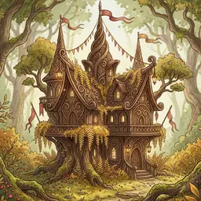
Gildenfern Courtconstruction · cost 2 twig, 3 resin, 3 pebble · 4 pts · 2 copies · uniqueEnd of game: 1 point per unique construction, itself included.
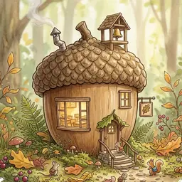
Acorn Academyconstruction · cost 2 twig, 2 resin · 2 pts · 2 copies · uniqueEnd of game: 1 point per common critter.
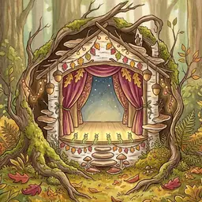
Glowworm Playhouseconstruction · cost 3 twig, 1 resin, 1 pebble · 3 pts · 2 copies · uniqueEnd of game: 1 point per unique critter.